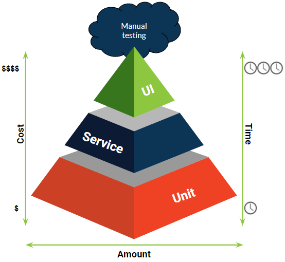
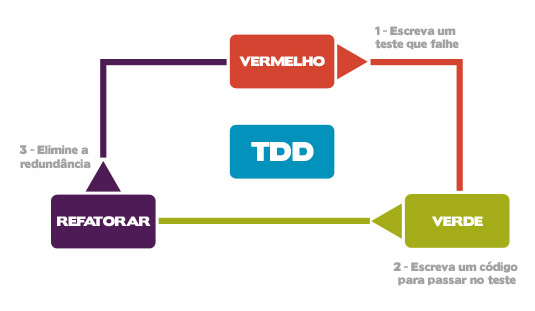
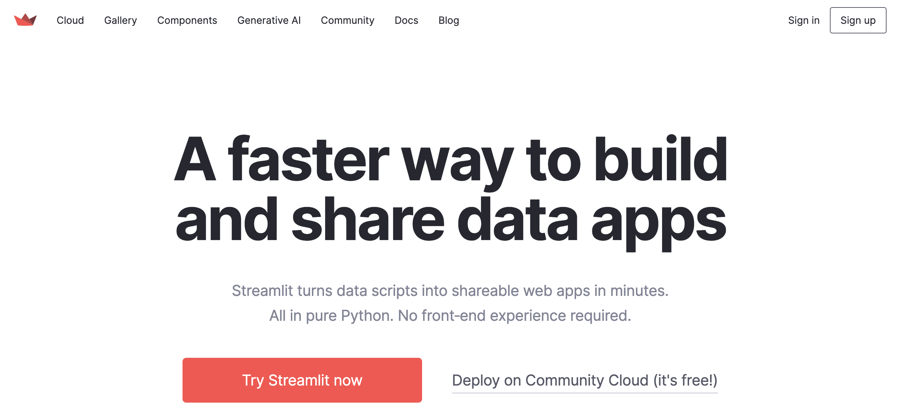

Fluxo do Workshop
Fique calmo, tudo vai dar certo.

Tem tudo em detalhes aqui no Data Project Starter Kit
1) Configuração inicial
1) Vamos criar um novo projeto no Git e Github
- Acessar site Github e criar nossa pasta
- Fazendo um teste simples para ver se tudo está bem
- Criando um README
touch README.md
- Salvando ele
git add .
git commit -m "docs: adicionando arquivo README"
git push --set-upstream origin main
- Deletando ele
git add .
git commit -m "docs: remover arquivo README"
git push
- Recuperando ele
git log
git checkout 3eab9123874b4ec51b0ab6d103a9483f2250c23f -- README.md
git add .
git push
2) Vamos definir nossa versão do Python usando o Pyenv
python --versions
pyenv versions
pyenv local 3.11.5
3) Vamos criar nosso ambiente virtual
Para criar o ambiente virtual, abra o terminal dentro da pasta criada e faça:
python -m venv nome_do_ambiente_virtual
# O padrao é utilizar .venv
source nome_do_ambiente_virtual/bin/activate
# Usuários Linux e mac
nome_do_ambiente_virtual\Scripts\Activate
# Usuários Windows
4) Instalando uma biblioteca
pip install selenium
4) Replicando ambientes
Agora, se quisermos rodar o nosso projeto em outra máquina, não será necessário baixar as dependências uma a uma, basta fazer:
pip freeze > requirements.txt
pip install -r requirements.txt
5) Desativando o ambiente virtual
E por fim, para desativar o ambiente virtual:
deactive
6) Criando o .gitignore
touch .gitignore
7) Melhorando nosso README
### Instalação e Configuração
1. Clone o repositório:
```bash
git clone https://github.com/lvgalvao/dataprojectstarterkit.git
cd dataprojectstarterkit
```
2. Configure a versão correta do Python com `pyenv`:
```bash
pyenv install 3.11.5
pyenv local 3.11.5
```
3. Instale as dependências do projeto:
```bash
python -m venv .venv
# O padrao é utilizar .venv
source .venv/bin/activate
# Usuários Linux e mac
.venv\Scripts\Activate
# Usuários Windows
pip install -r requirements.txt
```
2) Precisamos falar de testes
Diferença entre fases de teste, tipos de teste e formas de execução. Hoje em dia há muita confusão quando se fala em fases de teste, tipos de teste e formas de execução.
Se você, assim como eu, já ouviu as frases a seguir várias vezes, então esse artigo é para você!
- “Fulano sabe teste funcional e não automatizado”;
- “desenvolva o teste unitário antes dos funcionais”;
- “precisamos que os testes sejam 100% automatizados”;
- “cadê a massa de dados para os testes de contrato?”
Pirâmide de teste
Uma maneira mais visual de exemplificar um pouco sobre as fases de teste e os tipos de teste que cada fase contempla, é a pirâmide de automação de teste.

1) Criando nosso primeiro teste
pip install pytest
pip install selenium

Vamos criar nosso arquivo de teste
mkdir tests
cd tests
touch test_app.py
arquivo test_app.py
from selenium import webdriver
from selenium.common.exceptions import TimeoutException
from time import sleep
# Precismaos definir qual driver vamos utilizar
driver = webdriver.Firefox()
# Define um timeout implícito
driver.set_page_load_timeout(5) # 5 segundos
# Vamos fazer uma tratativa de try-except de entrar na nossa página
try:
driver.get("http://localhost:8501")
sleep(5)
print("Acessou a página com sucesso")
except TimeoutException:
print("Tempo de carregamento da página excedeu o limite.")
finally:
driver.quit()
Agora que já temos nosso teste vamos desenvolver nosso primeiro código
Para isso vamos trabalhar com o streamlit

Instalando o streamlit
pip install streamlit
Vamos fazer o nosso Hello World
mkdir src
cd src
touch app.py
arquivo app.py
import streamlit as st
# Título do App
st.title('Nosso Primeiro App com Streamlit')
# Escrevendo um Hello World com markdown
st.markdown('**Hello world!** 🌍')
# Escrevendo texto
st.write('Esta é uma demonstração de algumas funcionalidades do Streamlit.')
# Input de texto do usuário
input_texto = st.text_input('Digite algo aqui:')
# Mostrando o texto digitado
st.write(f'Você digitou: {input_texto}')
# Slider para números
numero = st.slider('Escolha um número', 0, 100, 50)
# Exibir o número escolhido
st.write(f'Você escolheu o número: {numero}')
# Gráfico de barras simples
import pandas as pd
import numpy as np
# Criando dados aleatórios
dados = pd.DataFrame({
'colunas': ['A', 'B', 'C', 'D', 'E'],
'valores': np.random.randn(5)
})
Temos nosso frontend /o/
Agora vamos para uma tangente
Temos um problema com nosso processo que muda de porta
Sempre que subimos uma nova aplicação ele está usando uma outra porta
Precisamos "matar" esse processo e reutilizar a porta 8501
Usamos o comando lsof (List Open Files) para verificar os processos que estão conectados nessa porta
lsof -i :8501
Depois usamos o comando kill para matar esse processo
kill -9 [PID]
Podemos simplificar usando somente uma linha
lsof -ti :8501 | xargs kill -9
No Windows, o comando lsof (List Open Files), que é comum em sistemas baseados em Unix como Linux e macOS, não está disponível. No entanto, você pode realizar uma tarefa similar para verificar quais processos estão usando uma porta específica (por exemplo, a porta 8501) usando o Resource Monitor ou comandos no Prompt de Comando. Aqui estão duas maneiras de fazer isso:
1. Usando o Resource Monitor
- Pressione
Ctrl + Shift + Escpara abrir o Gerenciador de Tarefas. - Vá para a aba "Desempenho" e clique em "Monitor de Recursos" na parte inferior.
- No Resource Monitor, vá para a aba "Rede".
- Olhe na seção "Portas de Escuta" para encontrar a porta 8505 e veja quais processos estão associados a ela.
2. Usando o Prompt de Comando
-
Abra o Prompt de Comando como administrador (isso é necessário para executar comandos que acessam informações de rede).
-
Digite o seguinte comando:
cmd netstat -ano | findstr :8501Esse comando lista todas as conexões e portas de escuta (
netstat -ano) e filtra os resultados para mostrar apenas as entradas relacionadas à porta 8505 (findstr :8501). -
Você verá uma lista de entradas, se houver alguma, mostrando o protocolo, endereço local, endereço estrangeiro, estado, e o PID (ID do Processo) associado à porta 8505.
-
Se você quiser saber qual aplicativo está associado a um PID específico, você pode encontrar este PID na aba "Detalhes" do Gerenciador de Tarefas. Para finalizar um processo em uma linha de comando no Windows, combinando a busca do processo pela porta e o encerramento do processo, você pode usar o PowerShell. O PowerShell é mais poderoso e flexível do que o Prompt de Comando tradicional para este tipo de operação. Aqui está como você pode fazer isso:
Abra o PowerShell como administrador e execute o seguinte comando:
Get-NetTCPConnection -LocalPort 8501 | Select-Object -ExpandProperty OwningProcess | ForEach-Object {Stop-Process -Id $_ -Force}
Este comando faz o seguinte:
-
Get-NetTCPConnection -LocalPort 8501: Obtém todas as conexões TCP que estão escutando na porta 8501. -
Select-Object -ExpandProperty OwningProcess: Seleciona os IDs dos processos (PID) que estão escutando naquela porta. -
ForEach-Object {Stop-Process -Id $_ -Force}: Para cada PID encontrado, usa oStop-Processpara encerrar o processo. A opção-Forceé usada para garantir que o processo seja encerrado.
Taskipy - Para não ficar toda essa quantidade de código, vamos usar o Taskipy

Basicamente o Taskipy é um short de comandos
Vamos instalar ele com o comando
pip install taskipy
Criar um arquivo de configuração
touch pyproject.toml
E dentro desse arquivo pyproject.toml incluir os comandos que queremos
[tool.taskipy.tasks]
run = "lsof -ti :8501 | xargs kill -9 | streamlit run src/app.py"
Agora conseguimos simplificar e tornar nosso processo de rodar nossa aplicação mais rápido
Saindo da tangente
python tests/test_app.py
E temos o nosso primeiro teste passando!
Agora temos duas opções.
Escrever um novo teste ou refatorar.
3) Nossa primeira refatoração
Vamos melhorar os nossos testes usando o pytest
1) Vamos criar uma função que inicia o nosso driver
2) Vamos criar uma função que testa se o site está online
Para nossa função vamos usar o módulo fixture do pytest
import pytest
import subprocess
from selenium import webdriver
@pytest.fixture
def driver():
# Iniciar o Streamlit em background
process = subprocess.Popen(["streamlit", "run", "src/app.py"])
# Iniciar o WebDriver usando GeckoDriver
driver = webdriver.Firefox()
driver.set_page_load_timeout(5)
yield driver
# Fechar o WebDriver e o Streamlit após o teste
driver.quit()
process.kill()
def test_app_opens(driver):
# Verificar se a página abre
driver.get("http://localhost:8501")
Além disso, Podemos incluir um comando novo no task
test = "lsof -ti :8501 | xargs kill -9 | pytest tests -v"
Nosso segundo teste
Vamos escrever um teste que cheque se o title ta página é validador de schema excel
Para isso vamos criar mais um teste
def test_check_title_is(driver):
# Verificar se a página abre
driver.get("http://localhost:8501")
# Verifica se o titulo de página é
sleep(5)
# Capturar o título da página
page_title = driver.title
# Verificar se o título da página é o esperado
expected_title = "Validador de schema excel" # Substitua com o título real esperado
assert page_title == expected_title, f"O título da página era '{page_title}', mas esperava-se '{expected_title}'"
Vamos revisitar nossa aplicação também
import streamlit as st
# Título do App
st.title('Validador de schema excel')
Nosso teste não passa =(
O motivo?
O streamlit e o selenium chamam coisas diferentes com o mesmo nome!
import streamlit as st
st.set_page_config(
page_title="Validador de schema excel"
)
3) Terceira Feature
Adicionar um texto no h1
test_app.py
from selenium.webdriver.common.by import By
def test_check_streamlit_h1(driver):
# Acessar a página do Streamlit
driver.get("http://localhost:8501")
# Aguardar para garantir que a página foi carregada
sleep(5) # Espera 5 segundos
# Capturar o primeiro elemento <h1> da página
h1_element = driver.find_element(By.TAG_NAME, "h1")
# Verificar se o texto do elemento <h1> é o esperado
expected_text = "Insira o seu excel para validação"
assert h1_element.text == expected_text
app.py
st.title("Insira o seu excel para validação")
4) Agora vamos criar um teste que o usuário pode inserir um excel, e vai aparecer uma mensagem de sucesso
Vamos criar nossa nova função
test_app.py
def test_check_usuario_pode_inserir_um_excel_e_receber_uma_mensagem(driver):
# Acessar a página do Streamlit
driver.get("http://localhost:8501")
# Aguardar para garantir que a página foi carregada
sleep(5) # Espera 5 segundos
# Realizar o upload do arquivo de sucesso
success_file_path = os.path.abspath("data/arquivo_excel.xlsx")
driver.find_element(By.CSS_SELECTOR, 'input[type="file"]').send_keys(success_file_path)
# Aguardar a mensagem de sucesso
sleep(5)
assert "O schema do arquivo Excel está correto!" in driver.page_source
app.py
arquivo = st.file_uploader("Carregue seu arquivo Excel aqui", type=["xlsx"])
if arquivo:
st.success("O schema do arquivo Excel está correto!")
Agora vamos parar com nosso frontend e ir para a parte do backend
Pydantic
Vamos instalar o Pydantic
pip install "pydantic[email]" openpyxl
Criar um arquivo de estes unitários test_unit.py
import pytest
from datetime import datetime
from src.contrato import Vendas, CategoriaEnum
from pydantic import ValidationError
# Testes com dados válidos
def test_vendas_com_dados_validos():
dados_validos = {
"email": "comprador@example.com",
"data": datetime.now(),
"valor": 100.50,
"produto": "Produto X",
"quantidade": 3,
"categoria": "categoria3",
}
# A sintaxe **dados_validos é uma forma de desempacotamento de dicionários em Python.
# O que isso faz é passar os pares chave-valor no dicionário dados_validos como argumentos nomeados para o construtor da classe Vendas.
venda = Vendas(**dados_validos)
assert venda.email == dados_validos["email"]
assert venda.data == dados_validos["data"]
assert venda.valor == dados_validos["valor"]
assert venda.produto == dados_validos["produto"]
assert venda.quantidade == dados_validos["quantidade"]
assert venda.categoria == dados_validos["categoria"]
# Testes com dados inválidos
def test_vendas_com_dados_invalidos():
dados_invalidos = {
"email": "comprador",
"data": "não é uma data",
"valor": -100,
"produto": "",
"quantidade": -1,
"categoria": "categoria3"
}
with pytest.raises(ValidationError):
Vendas(**dados_invalidos)
# Teste de validação de categoria
def test_validacao_categoria():
dados = {
"email": "comprador@example.com",
"data": datetime.now(),
"valor": 100.50,
"produto": "Produto Y",
"quantidade": 1,
"categoria": "categoria inexistente",
}
with pytest.raises(ValidationError):
Vendas(**dados)
Criar nosso arquivo de contrato contrato.py
from pydantic import BaseModel, EmailStr, PositiveFloat, PositiveInt, validator
from datetime import datetime
from enum import Enum
class CategoriaEnum(str, Enum):
categoria1 = "categoria1"
categoria2 = "categoria2"
categoria3 = "categoria3"
class Vendas(BaseModel):
"""
Modelo de dados para as vendas.
Args:
email (str): email do comprador
data (datetime): data da compra
valor (int): valor da compra
produto (str): nome do produto
quantidade (int): quantidade de produtos
categoria (str): categoria do produto
"""
email: EmailStr
data: datetime
valor: PositiveFloat
quantidade: PositiveInt
categoria: CategoriaEnum
@validator('categoria')
def categoria_deve_estar_no_enum(cls, error):
return errore
Nossos testes já passam /o/
Vamos refatorar nossa aplicação
Vamos segregar a lógica do frontend (streamlit)
Do app.py
Vamos sair disso
import streamlit as st
st.set_page_config(
page_title="Validador de schema excel"
)
st.title("Insira o seu excel para validação")
arquivo = st.file_uploader("Carregue seu arquivo Excel aqui", type=["xlsx"])
if arquivo:
st.success("O schema do arquivo Excel está correto!")
para isso
from frontend import ExcelValidadorUI
from backend import process_excel
def main():
ui = ExcelValidadorUI()
ui.display_header()
upload_file = ui.upload_file()
if upload_file:
result, error = process_excel(upload_file)
ui.display_results(result, error)
if __name__ == "__main__":
main()
Vamos criar nosso backend
import pandas as pd
from contrato import Vendas
def process_excel(uploaded_file):
try:
df = pd.read_excel(uploaded_file)
# Verificar se há colunas extras no DataFrame
extra_cols = set(df.columns) - set(Vendas.model_fields.keys())
if extra_cols:
return False, f"Colunas extras detectadas no Excel: {', '.join(extra_cols)}"
# Validar cada linha com o schema escolhido
for index, row in df.iterrows():
try:
_ = Vendas(**row.to_dict())
except Exception as e:
raise ValueError(f"Erro na linha {index + 2}: {e}")
return True, None
except ValueError as ve:
return False, str(ve)
except Exception as e:
return False, f"Erro inesperado: {str(e)}"
Vamos para o noss último teste!
Arquivo test_app.py
def test_failed_upload(driver):
driver.get("http://localhost:8501")
# Aguardar um tempo para a aplicação carregar
sleep(5)
# Realizar o upload do arquivo de falha
failure_file_path = os.path.abspath("data/failure.xlsx")
driver.find_element(By.CSS_SELECTOR, 'input[type="file"]').send_keys(failure_file_path)
# Aguardar a mensagem de erro
sleep(5)
assert "Erro na validação" in driver.page_source
Vamos precisar mudar o nosso frontend
def display_results(self):
return st.success("O schema do arquivo Excel está correto!")
def display_results(self, result, error):
if error:
st.error(f"Erro na validação: {error}")
else:
st.success("O schema do arquivo Excel está correto!")
Nossa documentação
bash
pip install mkdocs mkdocstrings
Vamos inserir nossa documentação
Vamos revisitar nosso código e inserir as docstrings
backend.py
"""
Processa um arquivo Excel, validando-o contra um esquema específico.
Args:
uploaded_file: Um arquivo Excel carregado pelo usuário.
Returns:
Uma tupla (resultado, erro), onde 'resultado' é um booleano indicando se a validação
foi bem-sucedida e 'erro' é uma mensagem de erro se a validação falhar.
"""
frontend.py
"""
Classe responsável por gerar a interface de usuário para o validador de arquivos Excel.
"""
contrato.py
"""
Modelo de dados para as vendas.
Args:
email (str): email do comprador
data (datetime): data da compra
valor (int): valor da compra
produto (str): nome do produto
quantidade (int): quantidade de produtos
categoria (str): categoria do produto
"""
pip install mkdocs "mkdocstrings[python]" mkdocs-material
mkdocs new
mkdocs.yml
site_name: "My Library"
theme:
name: "material"
plugins:
- search
- mkdocstrings
mkdocs gh-deploy